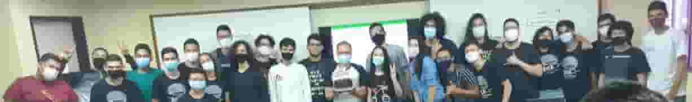
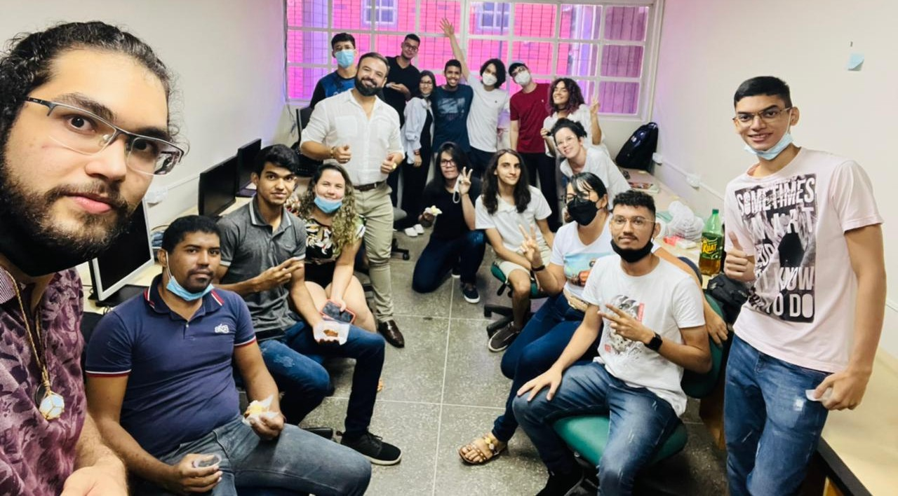
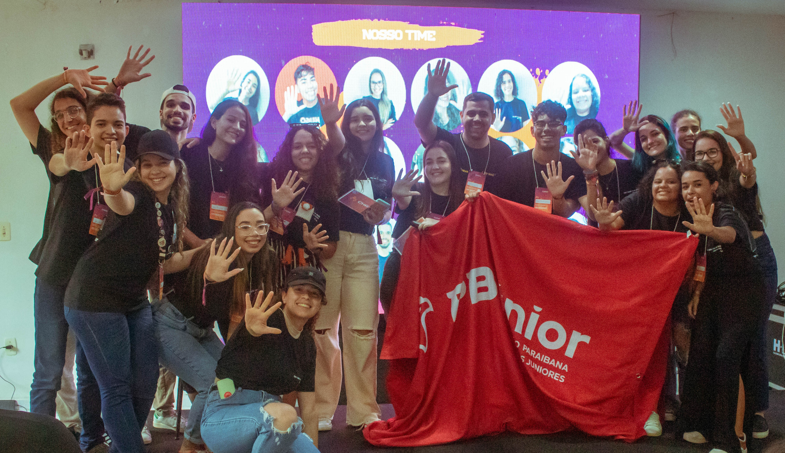
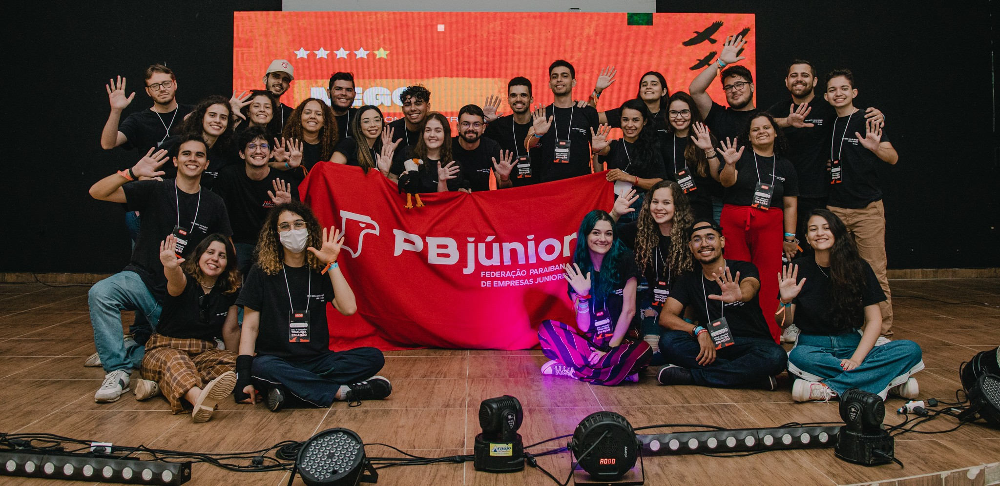
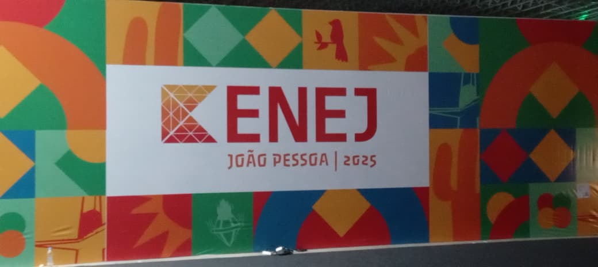
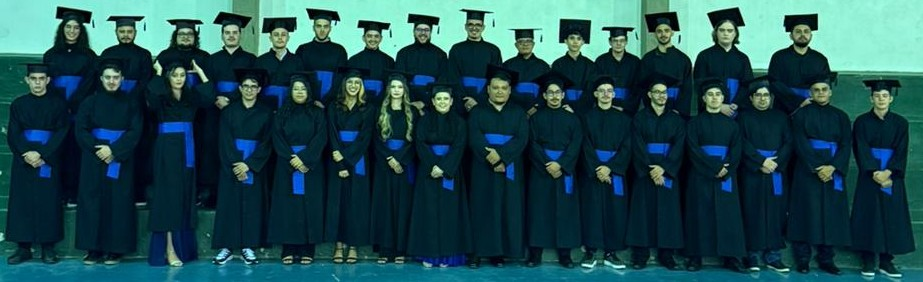

Experiências
05/2021: Início do curso
No dia 31 de maio de 2021 iniciavam oficialmente as aulas do curso de Análise e Desenvolvimento de Sistemas (ADS), no Instituto Federal de Educação, Ciência e Tecnologia da Paraíba (IFPB), campus Cajazeiras.
07/2021: Aprovação na Loopis

Como primeiro contato com o Movimento Empresa Júnior (MEJ), pouco após o início do curso, houve a aprovação e ingresso nas atividades da Loopis Soluções Tecnológicas, empresa júnior do curso de ADS.
01/2022: Diretoria de Marketing
Assim que o ano começou, já no dia 1° de janeiro, uma trajetória que viria a se tornar muito maior e mais impactante do que imaginava dava o seus primeiros passos: era o primeiro dia de liderança no MEJ, enquanto diretor de marketing da Loopis.
06/2022: Início na CWI

Outro grande acontecimento em 2022, dessa vez no segundo semestre, foi fazer parte da CWI Software enquanto estagiário pelo programa de formação Crescer e ter o primeiro contato com tecnologias como Java, SQL, React e Spring Boot, além de aprofundar conhecimentos em áreas como design, produto e arquitetura.
10/2022: Novo projeto, com Flutter

Após o final da formação, a atuação foi volatada para projetos de mercado. Inicialmente, ela ocorreu como desenvolvimento de uma aplicação móvel para uma empresa atuante na Argentina, que proporcionou o início dos estudos sobre mobilidade, o framework Flutter, a linguagem Go e a prática do espanhol.
03/2023: Ingresso na PB júnior
O início do melhor, participar da Federação mais xêta do Brasil, viver o presente, conhecer pessoas e realidades, voar em bando, descobrir possibilidades e desprender de limitações; enfim, fazer parte do movimento.
05/2023: Novo projeto, com Spring Boot
Com a finalização das atividades no projeto anterior, o seguinte chegou: atuar como desenvolvedor back-end em um contexto nacional de mudanças de hábitos com a tecnologia. Aqui houve a prática de muitos novos conceitos, como padrões de projeto, microsserviços e consumo de filas.
12/2023: Finalização da jornada na CWI
Depois de 18 meses de estudos teóricos e execução prática, o ciclo de aprendizado por meio do estágio chegava ao seu encerramento.
12/2023: Finalização da jornada na PB júnior
Ao final do ano mais intenso já vivido, as atividades de membro do time de Aceleração da Rede e Time PB estavam concluídas e mais um ciclo acabava.
03/2024: Início das atividades no Time NEGO'24

No primeiro semestre de 2024 uma nova entrega se aproximava, a organização do evento regional NEGO, e com ela um grande desafio: fazer com que esta edição fosse maior que as anteriores... e, com a presença de mais de 200 pessoas, a missão foi cumprida.
06/2024: Fim da jornada MEJ
Após 3 anos vivendo as melhores e mais significativas experiências, iniciadas na Loopis Soluções Tecnológicas, seguidas na PB júnior e encerradas com a entrega do NEGO Sonhos, a jornada no Movimento Empresa Júnior chegava ao seu fim.
10/2025: Formatura
No dia 01 de outubro de 2025 acontecia a cerimônia de colação de grau e a tão esperada mudança do título de "estudantes" para "tecnólogos", depois de 4 anos de estudos e projetos.